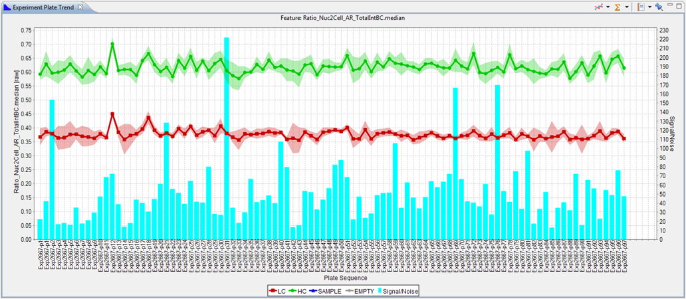

The Experiment Plate Trend displays a quality trend for all plates from the selected experiment. You can select different features in the Feature Selector.
By default, three items are plotted:
- The green line shows the mean value of the high controls, along with its standard deviation
- The red line shows the mean value of the low controls, along with its standard deviation
- The cyan bars in the background show the Zprime scores of each plate

There are some different options available in this chart:
| This allows you to select which well types will be plotted. | |
| This allows you to select which quality statistic to plot in the background. | |
| Open or create a Saved View /Report | |
| Pin (freeze) the contents so they will no longer change when another experiment is selected. |